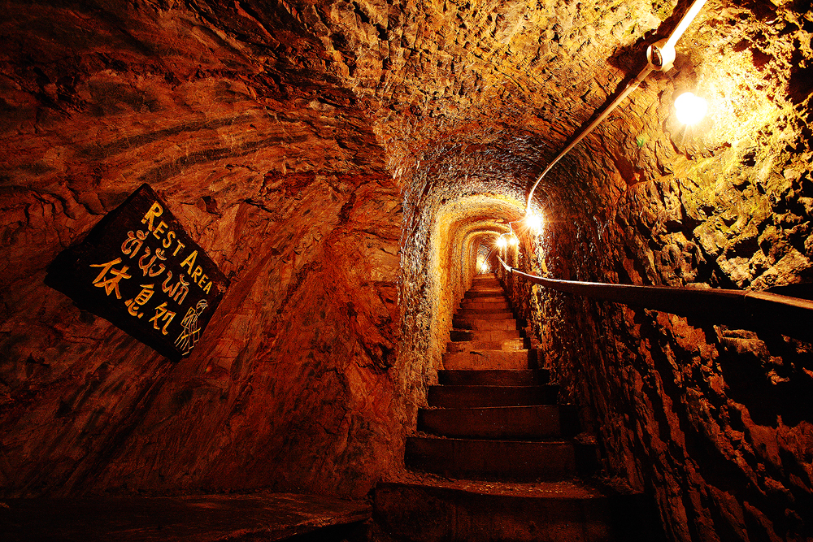
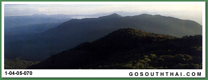
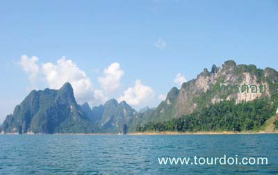
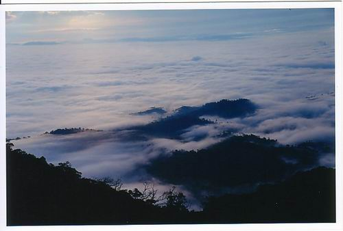

|  | เขาน้ำค้าง เขาน้ำค้างเป็นยอดเขาสูง มีอากาศหนาวเย็นตลอดปี สมัยโบราณคนที่เคยขึ้นไปบนยอดเขาจะเห็นมีน้ำค้าง เป็นเกล็ดอยู่ตามยอดหญ้า ลักษณะ เป็นใยแมงมุมแม้แต่ตอนเที่ยงวันก็มีน้ำค้างประปรายอยู่บนยอดหญ้าซึ่งเป็นสภาพที่แปลกเป็นอย่างยิ่ง จึงเรียกขานกันว่า"เขาน้ำค้าง" เขาน้ำค้าง เป็นเสมือนเขตหวงห้ามเป็นระยะเวลากว่า 40 ปี เริ่มตั้งแต่สงครามโลกครั้งที่ 2 โดยอยู่ในความยึดครองของ ผู้ก่อการร้ายโจรจีน คอมมิวนิสต์ เป็นบริเวณที่มีพื้นที่ภูมิประเทศเป็นถิ่นทุรกันดาร เทือกเขาสลับซับซ้อน ทำให้เป็น ฐานปฏิบัติการใหญ่ที่สุดแห่งหนึ่งของแถบนี้ แต่ ในที่สุดจากการปฏิบัติการตามแผนยุทธการใต้ร่มเย็น โดยนำนโยบาย การเมืองนำการทหาร กองทัพภาคที่ 4 และหน่วยผสมพลเรือน ตำรวจ ทหาร ที่ 43 (พตท.43) ได้นำนโยบายนี้เข้าปฏิบัติการ สามารถเข้ายึดค่ายปฏิบัติการได้สำเร็จ เมื่อวันที่ 25 กรกฎาคม 2523ทำให้โจรจีน คอมมิวนิสต์สลายตัวไปในที่สุด ลักษณะภูมิประเทศ ประกอบด้วยเทือกเขาสลับซับซ้อนเป็นแนวยาวไปตลอดจนถึงพรมแดนประเทศมาเลเซีย ประกอบด้วยยอดเขาที่สำคัญ คือ ควนสยา ควนเขาไหม้ โดยมียอดเขาน้ำค้างเป็นยอดเขาที่สูงที่สุดประมาณ 648 เมตรจากระดับน้ำทะเล เป็นแหล่งต้นน้ำลำธาร หลายสาย เช่น คลองนาทวี คลองทับช้าง คลองทรายขาว เป็นต้น ดินจะมีลักษณะเป็นดินร่วน ดินเหนียว หรือดินเหนียวปนทราย ส่วนลักษณะหินเป็นพวกหินปูนและหินแกรนิตเป็นส่วนใหญ่
|
|  | เขาหลวง ประวัติความเป็นมาเขาหลวง บริเวณดินแดนคาบสมุทรทางภาคใต้ของประเทศไทยใน จ.นครศรีธรรมราช มีพื้นที่ตอนกลาง เป็นส่วนหนึ่งของ ทิวเขานครศรีธรรมราช ภูมิประเทศส่วนใหญ่จึงเป็นเทือกเขาสูงสลับซับซ้อน ทอดตัวเป็นแนวยาวขนานไปกับชายฝั่งทะเลตะวันออก ในสมัยอดีตกาล กล่าวได้ว่าขุนเขาแห่งนี้ก็คือ อู่ข้าวอู่น้ำ ที่หล่อเลี้ยงสร้างความเจริญรุ่งเรืองให้แก่ ชุมชนโบราณ จนกระทั่งกลายเป็นอาณาจักรตามพรลิงค์ อันยิ่งใหญ่ของคาบสมุทรทะเลใต้ ทรัพยากร ที่มาจากเทือกเขาหลวงนั้นมีมากมายไม่ว่าจะเป็น แร่ธาตุ ไม้ สมุนไพร ของป่า หรือสายน้ำที่นำพาความ อุดมลงมาเอื้อการเพาะปลูก จนทำให้นครศรีธรรมราชในอดีตเป็นศูนย์กลางการค้าทางทะเลที่สำคัญยิ่ง ของเอเชียตะวันออกเฉียงใต้ มาในยุคปัจจุบันแม้ศูนย์กลางความเจริญของบ้านเมืองจะเปลี่ยนแปรไปตามกาลเวลาทว่าความมีคุณ สภาพทั่วไปของเขาหลวง อุทยานแห่งชาติเขาหลวง มีเนื้อที่ประมาณ 356,250ไร่ หรือ 570 ตารางกิโลเมตรมีที่ทำการ ลักษณะภูมิอากาศเป็นแบบคาบสมุทร มีฝนตกเกือบตลอดปี ฤดูฝนจะเริ่มตั้งแต่เดือนพฤษภาคม และตกหนักในเดือนตุลาคม ถึง ธันวาคม ฝนจะเริ่มน้อยลงในเดือนมกราคม ระหว่างเดือนกุมภาพันธ์ ถึงเมษายน ป่าไม้และพรรณพฤกษชาติ เป็นป่าดิบชื้น จะพบพืชพรรณแต่ละชนิดตามระดับความสูงของพื้นที่ นอกจากนี้ยังคงมีสัตว์ป่าอาศัยอยู่ค่อนข้างชุกชุม เช่น สมเสร็จ และเลียงผา สัตว์ป่าสงวนของไทย โดยเฉพาะพื้นที่ตอนกลางของอุทยาน สัตว์ป่าที่พบเห็นได้ง่าย คือ หมูป่า ค่าง ชะนี กระจง ชะมด แหล่งท่องเที่ยวที่สำคัญภายในอุทยาน ส่วนใหญ่คือ น้ำตกขนาดใหญ่ ได้แก่ น้ำตกกะโรม น้ำตกพรหมโลก น้ำตกกรุงชิง น้ำตกอ้ายเขียว และยอดเขาหลวง เป็นต้น กิจกรรมที่สำคัญ คือ การเดินศึกษาเส้นทางธรรมชาติบนเส้นทางศึกษาธรรมชาติน้ำตกกรุงชิง และเส้นทางดินป่าคีรีสู่ยอดเขาหลวง และการขี่ช้างล่องแก่งที่คลองกลาย ซึ่งเป็นการล่องแก่งด้วย ช่วงเวลาเหมาะสม สำหรับการขึ้นเขาหลวงเวลาที่เหมาะควรจะเป็นช่วงหน้าร้อน เนื่องจากสภาพ
|
|  | เขาสก ประกาศเป็นอุทยานแห่งชาติ เมื่อวันที่ 22 ธันวาคม 2523 มีชื่อว่า อุทยานแห่งชาติเขาสก มีพื้นที่ 645.52 ตารางกิโลเมตร หรือ 403,450 ไร่ สภาพโดยทั่วไปเป็นภูเขาหินปูนสลับซับซ้อน มีแนวหน้าผามากมายซึ่งเป็นลักษณะเด่นของภูเขาทางแถบนี้ซึ่งคล้ายกับเทือกเขาที่จังหวัดกระบี่ อุทยานแห่งชาติเขาสก มีพื้นที่กว้างขวางมีแหล่งท่องเที่ยวที่น่าสนใจได้แก่ เขื่อนรัชชประภา ถ้ำน้ำทะลุ ถ้ำปะการัง ถ้ำใหญ่ น้ำตกแม่ยาย น้ำตกโตนกลอย ตั้งน้ำ และอีกหลายน้ำตก
|
|  | เขาพนมเบญจา เขาพนมเบญจา
ตั้งอยู่ในเขต อุทยานแห่งชาติเขาพนมเบญจา เดินเท้าต่อจากคอนางนอน ประมาณ 500 เมตร เป็นยอดเขาสูงถึง 1,397 เมตร จากระดับน้ำทะเล บนยอดเขามีจุดชมทิวทัศน์มิตรไมตรี จากจุดนี้จะมองเห็นทิวทัศน์ของเมืองกระบี่ได้กว้างไกล เส้นทางขึ้นสู่ยอดเขาจะผ่านป่าดงดิบที่อุดมสมบูรณ์หนาแน่นด้วยต้นไม้ใหญ่ เช่น ตะเคียนทอง ยาง หลุมพอ ฯลฯ ผู้สนใจติดต่อเจ้าหน้าที่ช่วยนำทางได้ที่ที่ทำการอุทยานแห่งชาติ
|
 |
เขาอกทะลุ เป็นอีกหนึ่งสัญลักษณ์ของจังหวัดพัทลุงอยู่ทางตะวันออกของสถานีรถไฟพัทลุง ลักษณะเป็นเขาสูงโดดเด่นเห็นได้ชัดจากตัวเมือง จุดเด่นของเขาลูกนี้คือบริเวณเกือบตอนปลายของยอดเขามีโพรงถ้ำทะลุออกไปยังอีกด้านหนึ่ง เมื่อขึ้นไปถึงด้านบนสามารถชมทิวทัศน์เบื้องล่างผ่านโพรงถ้ำนี้ได ้หากเดินทางตามเส้นทางไปหาดลำปำจะมองเห็นโพรงนี้ได้อย่างชัดเจน เขาอกทะลุมีทางเดินขึ้นเขาเป็นบันไดคอนกรีตมีความสูงรวมประมาณ 250 เมตร
|